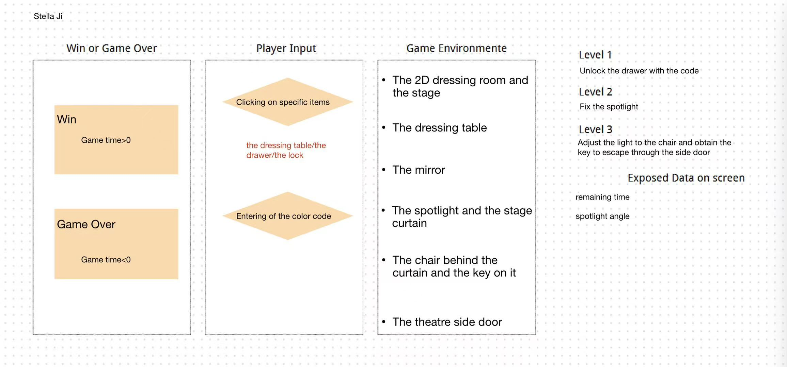
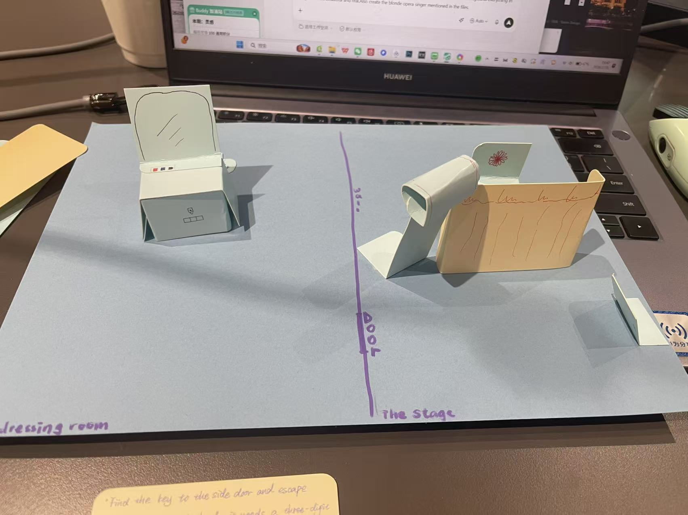

Design Review
Read the design brief and studied the system graph: mirror color code, drawer with lens/poem, broken spotlight, curtain, chair, and side door. Identified the core loop: observe → judge → act → feedback → adjust.
This project is a first-playable web game built from the design brief In the Opera House by Yuyue Ji. The goal was to turn a paper prototype and system graph into a working browser game that teaches the player how to escape a locked theatre through observation, tool collection, and sequencing.
The full human-AI development log is kept in agent-development-log.md.


Read the design brief and studied the system graph: mirror color code, drawer with lens/poem, broken spotlight, curtain, chair, and side door. Identified the core loop: observe → judge → act → feedback → adjust.
Implemented the complete three-level sequence in a single HTML/CSS/JS file set: Level 1 unlocks the drawer, Level 2 repairs and powers the spotlight to open the curtain, Level 3 rotates the beam onto the chair to reveal the key and escape. Added a 10-minute countdown timer with win/lose states.
Applied a vintage opera aesthetic: velvet reds, gold trim, ornate frames, and a blonde opera singer character. Kept graphics readable and scalable for a 1920×1080 exhibition screen.
Added direct control of the opera singer with arrow keys / WASD. The stage is hidden until the singer walks onto it; the player can walk back and forth between dressing room and stage to explore. The spotlight/key logic was tightened so the key only appears when the beam is clearly aimed at the chair.
Expanded the dressing room with chandeliers, wardrobe, velvet stool, flower vase, side table, and vanity props. Upgraded the opera singer and stage with richer gold trim, crystal chandeliers, and more detailed silhouettes.
Played through the full game to verify the code lock, inventory, spotlight angle logic, curtain animation, key appearance, and door escape. Ensured the timer stops correctly on both win and lose.
Built the project website (Home, Play Game, Development Process) with relative paths and created the required README, THIRD_PARTY, and submission manifest files.
Track A — No build step. The game uses plain HTML, CSS, and JavaScript
so it runs on any ordinary static HTTP server without Node.js or npm.
Visual approach: CSS-only vintage styling with a few custom SVG-like shapes
built from CSS gradients and borders. This keeps the project lightweight and easy to modify.
Student decisions: Preserved the designed level order and color code.
Added keyboard movement for the opera singer, room-transition exploration, and Q/E spotlight rotation to make the final stage feel more direct.